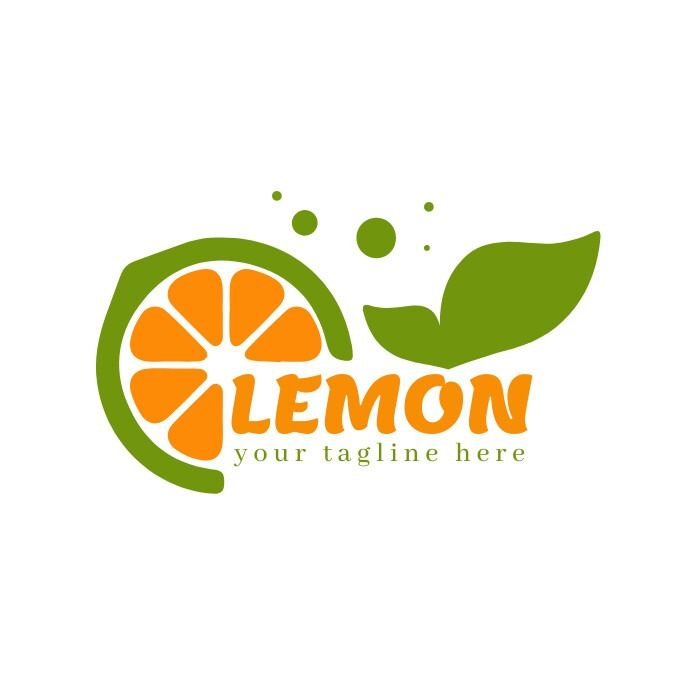
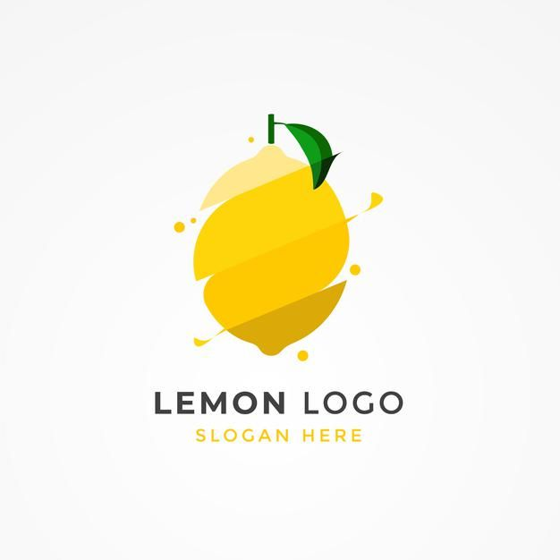
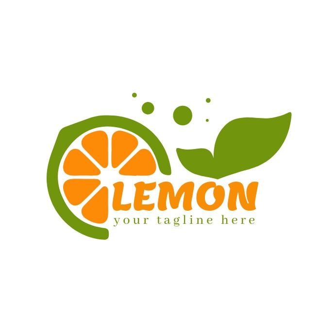
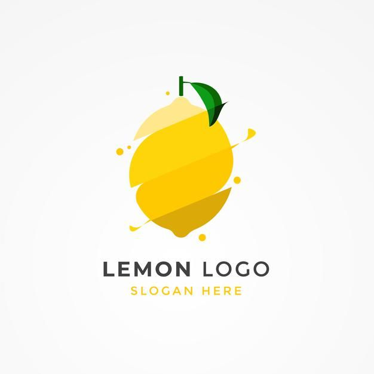

Website for Design Zest
I decided to do a qucik website for our group and because most of the members don't like coding i decided that I will make it and they will get the designing part or documentation. First i started looking at Media companies and get inspiration and ideas from them, most of them had really creative design and also had a lot of clients and designs made for them but because we didn't have client and a lot of work i decided to go with a simple layout of our work till this semster. I also saw a lot of animations with mastery area showing what they provide and how they work also I saw from tik tok 3D image gallery and decided to show our posters made for our group and for the landing page I wanted to do animation logo on the top bar so it will be more interactive
For competitive analysis I took all the ideas from different websites and was thinking how to put it in the group's website so that we can present it and all the needed information will be there, First I made a list of what will one website need for a media company and i putted things like our work, posters, methods, structure of our work etc. and later decided to search from these websites that I liked the most how they designed it. I circled with red everything I liked and implemented it into the website

To code the mastery area was hard because the website that I got the idea from made it with animations etc. but i am still not really proficient with animation so I was trying to find a way to play with CSS and JS I also asked for help one of my friends that are good with JS and then i tried to do most of the part alone but I also had help from AI. The landing page animation was not made by me but everything else was coded by me, with every step I asked my teammates if they agree with the design and changes I make and also the inspiration I got from multiple websites for media companies, I tried to recreate some eZects (the circles sections) that originally was made with animations etc. and I wasn’t able to do it so I decided to recreate it with CSS keyframes and JS, also another interactive thing is the image gallery that is a 3d slider gallery where all of our posters are there. The website with the commits is in GitHub where everyone with the link can see it.
I had a very positive feedback and the teacher suggested to mimic the animation and make it my own for example the mastery are to be a zest ares and make the circle look like a lemon so I decided to continue develop the website through the project. We also had a feedback when we presented to make sure put a mockup email or pay attention on the details because I putted email names "info@designzest.com" and it didn't exist

Website Portfolio
After coming up with a name for our group I decided to do a logo that is unique and is showing off the "zest" part I looked at logos on pinterest and come up with the idea to make the "z" look like a lemon, make logos woth different shapes to be more simple, or include basically a halt lemon in our logo
 





After having in mind what I want I startd designing and using also AI to generate me a "z" that look like a lemon. I made several logos ideas and then put them together to gather feedback later on, My first logo was mainly focused on the AI version and i copy pasted the "z" and put it in canva and continued the "est" later with a font that will match the "z". I found it at first good because it showes the peeled lemon and also the design was good , the zester was also there but putting "Design" looked off so I decided to get a feedback from the teacher
I asked Dirk on my logo design and he told me that is too detailed and better make more research on how the nowadays logos look like, he told me also to visualize how it will look in every possible size. Because the logo I created at first when I put in a website it will be small and the details wont be noticable, that will represent more of a "bad design choice"

After the feedback I decided to create more simple logos, something with squares, circles etc. I did a research more in deep and then saw one of my old photos inspirations from pinterest and then i got the idea to place yellow stripes with a form of a lemon and the darker coloured stripes will be the zester, additionally I desided to put the name of the group below the stripes as well, it turned out simple and pretty but I didn't know if people will notice that this is a lemon or if they will recognize our group, so i asked Mikael for a feedback and without having to exmplain he went for that logo and told me that he actually sees the lemo and the zester. The other logos in my opinion were still too detailed or not so representable of the name "design zest"

I realized that not everything needs to be chaotic and to have a lot of details, its important most of the times to have a simple design that a big group of audience can undestand by just looking at it, having feedbacks for iterations also are a big role in making a product